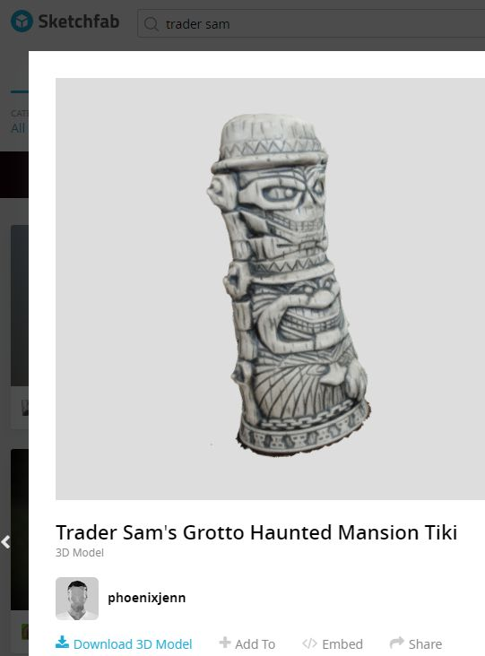

From Tiki to Tech: How I Turned My Favorite Haunted Mansion Ghost into a VR Party Guest
June 26, 2021·1 min read·3D Capture

Over the past weeks, I’ve been tinkering with photogrammetry, a technique which transforms real-world objects into immersive 3D models. My experiment began with capturing a series of photos of my beloved Trader Sam's Grotto tiki—featuring the iconic Haunted Mansion Ghosts. I used 3DF Zephyr, to stitch the photos together to create a 3D model.Once the model was complete, I couldn't wait to drag my swag into virtual reality. With the help of Sketchfab, I uploaded my monsterpiece and imported it into Unity, where I began to craft a virtual environment around it. Finally, I brought my tiki into Altspace VR, where I proudly displayed my prize that I transported physical to the virtual realm. I like to think that Walt would have been proud. The process was surprisingly straightforward, thanks to the user-friendly tools and platforms available for photogrammetry and VR development. In just a few simple steps, I was able to transport my favorite tiki into a virtual space, where I could admire it from any angle and even invite others to join me in the virtual hangout.If you're curious to see the results of my photogrammetry experiment, check out the link below and explore the tiki for yourself. Who knows? Perhaps this glimpse into the possibilities of photogrammetry will inspire you to embark on your own journey of virtual creation.
LINK-> My Trader Sam's TikiHappy exploring!LinkedIn Post
Jenn Lee
Lead of Emerging Technology & Automation at Disney. Building in XR since 2019.
Daily Meta Ray-Ban wearer. Creality Raptor Pro owner (still learning).
Everything I build, break, and learn ends up here.